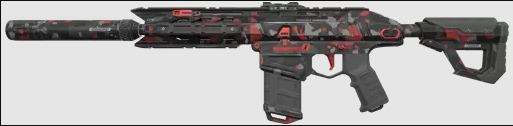
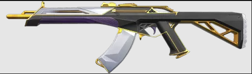
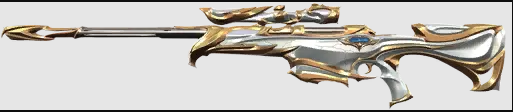
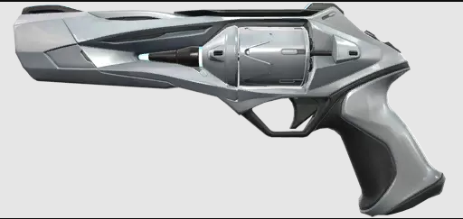

Bem vindo as minhas armas e skins favoritas
Phantom
Eu gosto muito da Phantom pela sua cadencia, ela tem vantagens encima da vandal por conta da sua quantidade de balas e rapidez
Costumo usar ela nas maiorias das partidas, principalmente de controlador(Smoke).
Minha skin favorita:

Mais informações sobre ela: AQUI
Vandal
Eu gosto da Vandal por sua capacidade de dano independente da distância, tiro na cabeça é insta morte,
Costumo usar ela de duelista e iniciador.
Minha skin favorita:

Mais informações sobre ela: AQUI
Operator
Eu gosto muito de usar Operator de duelista, defesa e as vezes no ataque, essa arma trás muitos first bloods e com isso ganhamos vantagens.
Minha skin favorita:

Mais informações sobre ela: AQUI
Sheriff
Por final uma arma que costumo trazer no eco com quase todos os bonecos e classes, arma que dependendo da distância, insta kill.
Minha skin favorita:

Mais informações sobre ela: AQUI